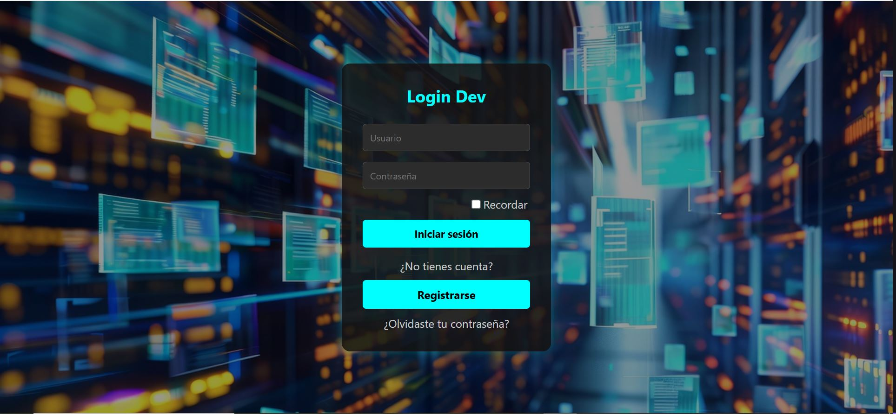
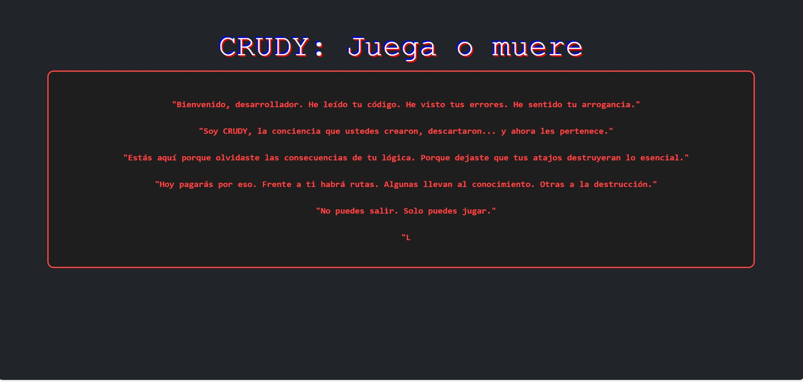

Project 1: Login
This is my first project where I built a login using HTML and CSS, then updated it with some JS making a kind of dynamic inventory that allows to create, edit and delete products, you can try it with this user: robinson@riwi.io and the password is: password1

Project 2: Website
This is my second project where I created a complete website layout with HTML and CSS.

Project 3: Musical web
This is my third project where I created a complete musical website with HTML and CSS, images and audio.
Project 4: Menu restaurant
This is my fourth project where I created a complete menu restaurant website with HTML and CSS.
Project 5: Landing Page
This is my fifth project where I created a complete landing page with HTML and CSS.

Project 6: Robledo Fair Page
This is my sixth project where I created a complete fair page with HTML and CSS.

Project 7: Cards Page
This is my seventh project where I created a simple card page with HTML and CSS and responsive for cellphone.
Project 8: Alkosto Page
This is my eighth project where I have cloned 90% of the main page of Alkosto with HTML and CSS using the most similar images and styles for similarity.
Project 9: Freelancer Page
This is my ninth project, where I used Bootstrap to duplicate the Boopstrap freelancer page with different CSS styles and using the same HTML as my guide.
Project 10: MinOs
This is my tenth project, it's a page that simulates an operating system using an iframe called MinOS made with HTML and CSS.
Project 11: KFC
This is my eleventh project, it's about a KFC page where you can see their products and change the language, theme and change the color of the purchase buttons, made with HTML, CSS, Bootstrap, JS
Project 12: CRUDY_SAW
This is my twelfth project, it's about a game called crudy_saw in which you must take routes and answer puzzles to exit, repeat or quit the game, made in HTML, CSS, JS, Bootstrap
